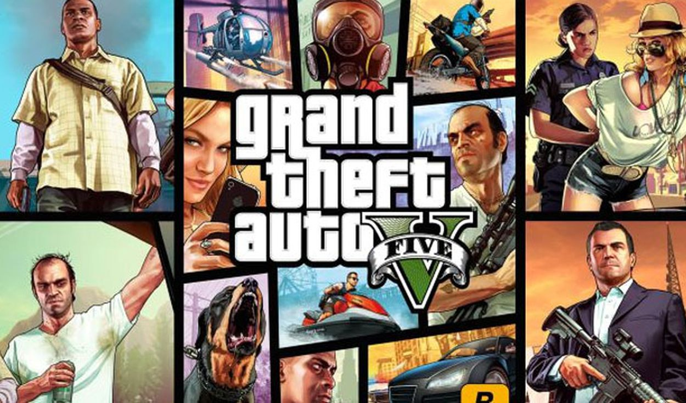

GTA 5 es la quinta entrega de la exitosa saga de videojuegos sandbox desarrollada por Rockstar Games, Grand Theft Auto. Con millones de ventas a sus espaldas y uno de los mundos abiertos más ricos hasta la fecha, Grand Theft Auto V transporta al jugador a Los Santos, una extensa y soleada metrópolis en declive que lucha por mantenerse a flote en una era de incertidumbre económica y realities baratos que referencia de una forma paródica a la Los Ángeles de nuestro tiempo.
Desarrollador:RockStar GamesEditor:Rockstar Games Género:Acción, Acción y aventura, Shooter (Policíaco y Thriller y Mafia) Jugadores:1-30 (Competitivo: GTA online / Cooperativo: GTA online )Duración:35-80 horas + multijugador Idioma:Textos en español y voces en inglés Lanzamiento:18 de noviembre de 2014 (Pegi: +18)
Plataformas disponibles: PC/XBOX/PS4